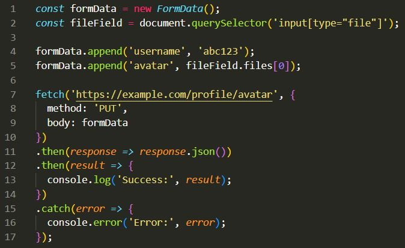

Week 10
Notes
- Before you submit data to the server, it is important to make sure that all required form controls are filled out in the correct format. This is called client-side form validation, which helps make sure data submitted matches the requirements set forth in the various form contorls.
- Client-side validation is an initial check and important for good user experience; having the the invalid data be caught on the client-side, is much quicker and a straight fix since they can fix it straight away.
If it is checked on the server side and is rejected, there is a delay that is noticeable to the user because it has to go through the server side and then back to the client-side to tell the user to fix their data.
- Although, client-side validation takes less time to fix it should not be considered a full-scale security measure.
The apps that you create should always perform security checks on any form-submitted data, not just on the server-side but the client-side as well, this is because client-side validation is too easy to bypass, malicious users can still easily send bad data through to your server.
- Form validation is when you enter data and the browser and/or the web server will check to see if the data is in the correct format specified and within the constraints set by the application.
Validation that is done in the browser is called client-side validation and validation done on the erver is called server-side validation.
- If the information is correctly formatted in the form, the application allows the data to be submitted to the server and can (usually) saved in a database; if the information isn't correctly formatted, it gives the user an error message, explaining what needs to be fixed and lets the user try again.
- Three main reasons to validate forms:
You want to make sure you get the right data, in the right format. The applications won't work properly if our user's data is stored in the wrong format, or incorrect or even is omitted altogether.
You want to protect your user's data. Making your users to enter secure passwords makes it easier to protect their account information.
You want to protect yourselve. There are many wasys that malicious users could misuse unprotected forms to damage the application.
Warning:Never trust data that is passed to your server from the client. Even if your form is validating correctly and preventing malformed input on the client-side, a malicious user could still alter the network request.
- Built-in form validation (HTML5 form validation features) which doesn't require a lot of JavaScript and has better performance than JavaScript.
required: Specifies whether a form field needs to be filled out before the form can be submitted.
minlength and maxlength: Specifies the minimum and maximum length of textual data, meaning strings.
min and max: Specifies the minimum and maximum values of numerical input types.
type: Specifies whether the data needs to be number, an email address, telephone, or some other specific preset type.
pattern: Specifies a regular expression that defines a pattern the entered data needs to follow.
- If the data entered is valid, the following things are true:
The element matches the :valid CSS pseudo-class, which lets you apply a certain style to valid elements.
If the user tries to send the data, the browser will then submit the form, as long as there is nothing else stopping it from sending it (e.g., JavaScript).
If the data entered is invalid, the following things are true:
The element matches the :invalid CSS pseudo-class, and sometimes other UI pseudo-classes like :out-of-range depending on the error, which lets you apply a certain style to invalid elements.
If the user tries to send the data, the browser will then block the form from sending and display an error message.
There are several errors that will prevent the form from being submited, shown in Form Validation
- You have to use JavaScript if you want to take control over the look and feel of native error messages or when dealing with legacy browsers that do not support HTML's built-in form validation.
- Most browsers do support the Constraint Validation API, which consists of a set of methods and properties available on the following form element DOM interfaces:
HTMLButtonElement (represents a <button> element)
HTMLFieldSetElement (represents a <fieldset> element)
HTMLInputElement (represents a <input> element)
HTMLOutputElement (represents a <output> element)
HTMLSelectElement (represents a <select> element)
HTMLTextAreaElement (represents a <textarea> element)
- The Constraint validation API makes the properties below, available on the above elements.
- validationMessage: Returns a localized message describing the validation contstraints that the control doesn't satisfy (if there is any). If the control is not a candidate for constraint validation (willValidate is false) or the element's value satisfies its constraints it would be (is valid), this will return an empty string.
- validity: Returns a ValidityState object which contains several properties describing the validity state of the element. Below are just a few commons available properties for ValidityState:
patternMismatch: Returns true if the value doesn't match the specified pattern, and false if it does match the pattern. If true, the element matches the :invalid CSS pseudo-class.
tooLong: Returns true if the value is longer than the maximum length that was specified by the maxlength attribute, or false if it is shorter than or equal to the maximum. If true, then the element matches the :invalid CSS pseudo-class.
tooShort: Returns true if the vale is shorter than the minimum length that was specified by the minlength attribute, or false if it is greater than or equal to the minimum. If true, then the element matches the :invalid CSS pseudo-class.
rangeOverflow: Returns true if the value is greater than the maximum that was specified by the max attribute, or false if it is less than or equal to the maximum. If true, the element matches the :invalid and :out-of-range CSS pseudo-classes
rangeUnderflow Returns true if the value is less than the minimum that was specified by the min attribute, or false if it is greater than or equal to the minimum. If true, then the element matches the :invalid and :out-of-range CSS pseudo-classes.
typeMismatch: Returns true if the value is not in the required syntax (when type is either email or url), or false if syntax is correct. If true, then the element matches the :invalid CSS pseudo-class.
valid: Returns true if the element meets all its validation constraints, and so then it would be considered to be valid, or false if it fails any constraint. If true, then the element matches the :valid CSS pseudo-class; if false, then it's the :invalid CSS pseudo-class.
valueMissing: Returns true if the element has a required attribute, but no value, or false if the opposite. If true, then the element matches the :invalid CSS pseudo-class.
willValidate: Returns true if the element will be validated when the form is submitted; false if not.
- The Constraint Validation API also makes the following methods available on the elements that are above and the form element as well.
checkValidity(): Returns true if the element's value has a no validity problems; false if it does. If the element is invalid, then this method also fires an invalid_event on the element.
reportValidity(): Reports invalid field/fields using events. This is useful in combination with preventDefault() in an onSubmit event handler.
setCustomValidity(message): Adds a custom error message to the element; if you set a custom error message, the element is considered to be invalid, and the specified error will be displayed. This lets you use JavaScript code to establish validation failure besides the other ones offered by the standard HTML5 validation constraints. The message is shown/displayed to the user when reporting the problem.
- Creating a customize error message instead of the automated message that look different with other browsers.
The automated messages have two drawbacks:
There is no standard way to change the look and feel of them in CSS.
They depend on the browser locale, which means that you can have a page in one language but an error message displayed in a different language, like when in Firefox.
- Customizing these error messages is one of the most common use of the constraint validation API. Below is a simple example of the HTML code and JavaScript to create a customized form message:
Simple HTML:
JavaScript:
Here it stores a reference to the email input, then add an event listener to it that runs the contained code each time the value inside the input is changed.
Inside the contained code, we check whether the email input's validity.typeMismatch property returns true, which means that the contained value doesn't match the pattern for a proper email address. If so, it calls the setCustomValidity() method with a custom message which is displayed by calling reportValidity(). It renders the input invalid, so that when you try to submit the form, submission fails and the custom error message is displayed.
If the validity.typeMismatch property returns false, we call the setCustomValidity() method an empty string which renders the input valid, so the form will submit.
- The fetch() method can accept an optional second parameter, an init object which allows you to control a number of different settings:
Note that mode: "no-cores" allows only a limited set of headers in the request:
Accept
Accept-Language
Content-Language
Content-Type with a value of application/x-www-form-urlencoded, multipart/form-data, or text/plain
- To have browsers send a request with credentials included on both same-origin and cross-origin calls,add credentials: 'include' to the init object you pass to the fetch() method, for example:
fetch('https://example.com', {
credentials: 'include'
});
Note: "Access-Control-Allow-Origin" is prohibited from using a wildcard for requests with credentials: 'include'. In this case, the exact origin must be provided; even if you are using CORS unblocker extension, the request will still fail.
Note: Browsers should not send credentials in preflight requests irrespective of this setting. If you want more information see: CORS > Requests with credentials.
- If you want to send credentials only if the requested URL is on the same origin as the calling script, add credentials: 'same-origin'.
// The calling script is on the origin 'https://example.com'
fetch('https://example.com', {
credentials: 'same-origin'
});
- To make sure that browsers don't include credentials in the request, use credentials: 'omit'.
fetch('https://example.com', {
credentials: 'omit'
})
- You use fetch() to POST JSON-encoded data.
- Files can be uploaded using an HTML <input type="file"/> input element, FormData() and fetch(). 
- Files can be uploaded using an HTML <input type="file" multiple/> input element, FormData() and fetch().

Questions:
- When would it be best to use novalidate attribute instead of leave it off when building custom validations for forms?
Exercises
Team Activity